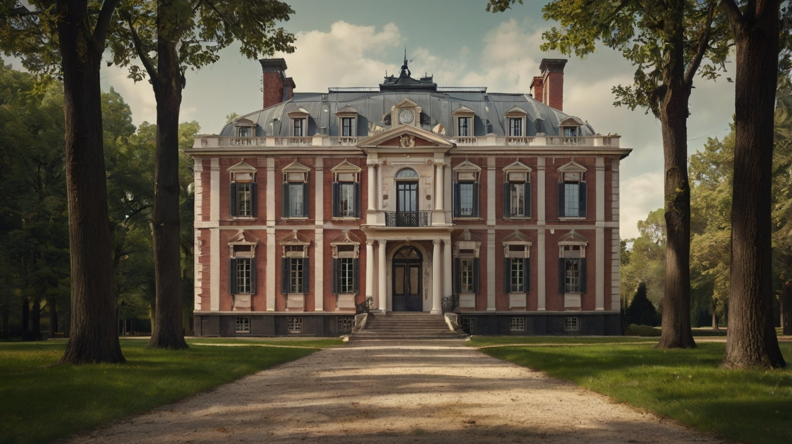
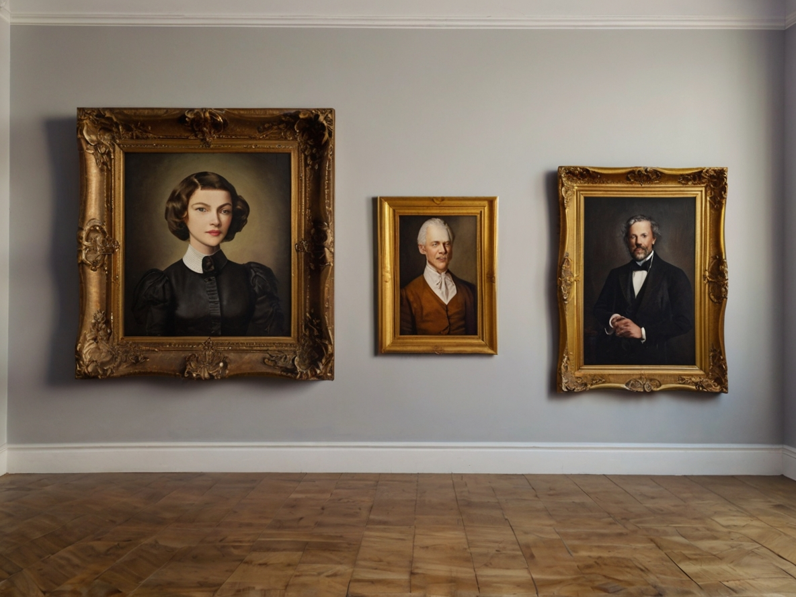
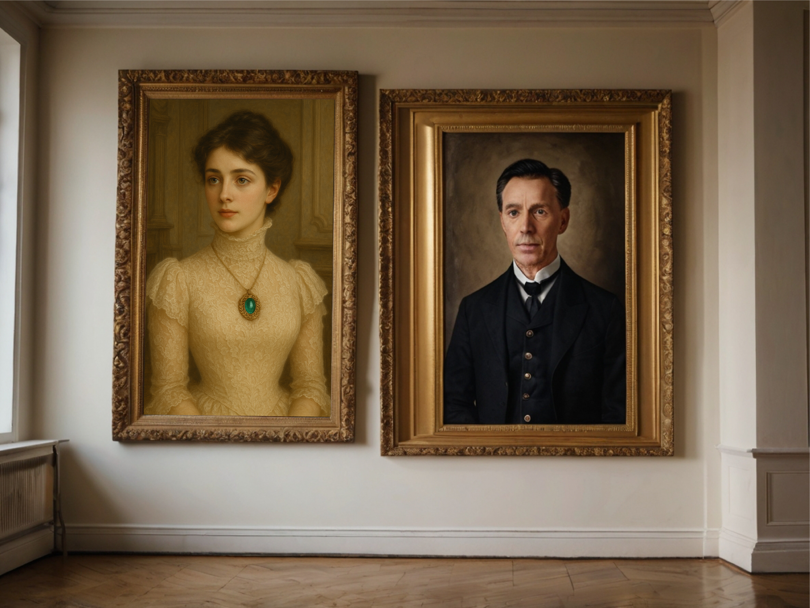
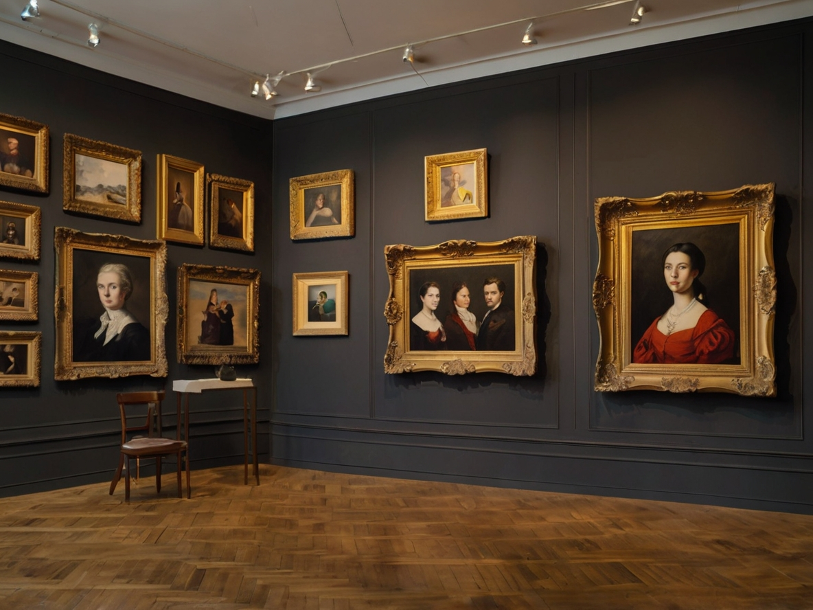

История, живущая в стенах
Среди вековых дубов и увитых плющом аллей, в самой сердцевине города, возвышается здание, которое помнит дыхание четырёх столетий — усадьба Блэквудов, ныне музей, но прежде — родовое гнездо одной из самых старинных и влиятельных семей региона. Построенная в 1689 году, усадьба стала первой каменной постройкой в округе, и с неё, по праву, началась история города. Сначала как уединённое имение, затем как культурный и хозяйственный центр, Блэквуд-холл на протяжении веков оставался символом стабильности, традиций и величия.

Дом передавался от отца к старшему сыну, строго соблюдая семейные обычаи, что сформировало не только архитектурный облик усадьбы, но и её характер. Каждый владелец оставлял след: один расширил библиотеку, другой построил оранжерею с редкими южными растениями, третий начал собирать картины и создавать галерею, которая сегодня признана одной из самых ценных частных коллекций живописи в стране. Особняк становился всё более изысканным, наполняясь картинами, гобеленами, рукописями, фарфором и музыкальными инструментами, привезёнными из разных уголков мира. Это был не просто дом, а живая энциклопедия эпох — от барокко до ар-деко.
Однако история не пощадила и эту семью. Во время Первой мировой войны молодой владелец усадьбы, сэр Гаррет Блэквуд, отправился добровольцем на фронт и бесследно исчез в 1916 году. Его пропажа стала настоящей трагедией не только для семьи, но и для всего города. Не оставив прямых наследников, он передал судьбу дома своему брату Арчибальду, человеку более уединённому, но глубоко преданному семейному наследию. Именно при нём были проведены первые реставрации и началась каталогизация художественной коллекции.
Сегодня Блэквуд-холл — это музей, в котором бережно сохранено всё, чем жила семья: от старинной мебели и личных писем до полотен известных художников, часть из которых долгое время была недоступна для широкой публики. Здесь хранятся работы как признанных мастеров, так и малоизвестных гениев, чьи картины были приобретены лично членами семьи во время европейских и американских турне. Коллекция удивляет своей глубиной и эклектичностью: от английского портретного искусства XVIII века до модернистских экспериментов 1930-х годов.
Усадьба — это не только музей. Это — документ в камне, летопись личных и общественных историй. Здесь царит особая атмосфера: вы проходите по скрипучим лестницам, ощущая запах воска и древесины; задерживаетесь у старинного рояля в музыкальной гостиной, где когда-то проходили вечера для городской элиты; заходите в библиотеку, где страницы старинных фолиантов хранят отпечатки пальцев людей, живших века назад. Каждая комната словно застыла во времени: всё здесь дышит прошлыми жизнями.
Семья Блэквудов больше не живёт в усадьбе, но продолжает заботиться о её судьбе. Все экспонаты по-прежнему являются частной собственностью семьи, однако по их решению дом открыт для всех, кто хочет прикоснуться к прошлому, узнать о быте, культуре, мечтах и трагедиях людей, создавших этот город. Музей-усадьба — это приглашение в прошлое, где история становится личной.
Музей работает круглый год. Мы приглашаем вас на экскурсии, временные выставки, лекции по искусству и камерные концерты в зале с акустикой XVIII века.



Мы нашли и оцифровали архивы местной церкви. В них сохранились записи о бракосочетании и рождении за период с 1645 по 1917 года.
Возможно, вы сможете проследить историю своей семьи и найти родственников, благодаря им
Для поиска введите имя или фамилию